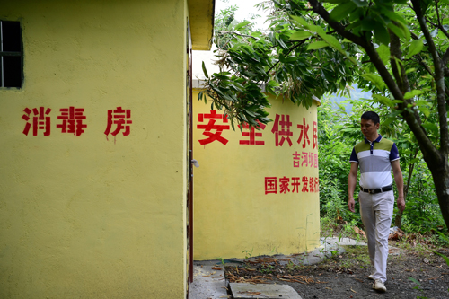

除了厕和路，还有哪些短板掣肘乡村振兴？

2017年6月12日，陕西省安康市工作人员在汉滨区吉河镇吉河坝社区巡视安全饮水工程的管理站房和水塔 邵瑞摄
习近平总书记对解决农村厕所、农村道路问题先后作出重要批示，点中了实施乡村振兴战略中基础设施建设的两块软肋。半月谈记者调研发现，我国农村基础设施条件明显改善，但受历史欠账较多、资金投入不足、融资渠道不畅等多种因素制约，水、电、气、物流、污染处理设施等也存在突出短板，成为乡村振兴道路上的五大“拦路虎”。
水：安全饮水难保障，农田水利仍薄弱
南方多喀斯特地貌区，下雨三日涝，天晴三日旱，导致饮水难成为普遍问题。虽然有的村庄在地方党委政府的帮助下，打了水井，但地下水钙质含量过高，仍会对村民身体健康带来影响。“期盼能喝上干净、健康的自来水，这是我们最大的梦想。”湖南省邵阳县的村民陈响英告诉半月谈记者。
近年来，各地通过加快推进农村饮水安全建设，大范围的“饮水难”已经很少见，但是饮水不安全、不健康、不稳定等问题非常突出。半月谈记者发现，部分已建饮水工程建设标准低、供水保证率低、水质合格率低，虽然解决了方便用水问题，但没能保障安全用水、健康用水。加上农村饮水工程重建轻管，缺乏管理人员和运转经费，已建工程出现问题几率高、报废率高，工程使用寿命短。
与饮水安全建设类似，农田水利建设同样存在诸多问题。多名水利干部反映，近年来重点攻坚工程主要在水库和主干渠道，忽视了农田水利工程的建设，小水窖、小水池、小塘坝、小泵站、小水渠等“五小水利”工程普遍带病运行。
【记者评点】
要解决农村“水”的困局，既要政府加强推动，继续加大投资，又要加快农村供水设施产权制度、农村水利设施建设管理机制等多方面的改革，以适当的方式引入社会资本，打破单纯由政府或者市场的建设管理模式，靠政府加市场的“两条腿”走路。
气：能源结构单一落后，沼气叫好不叫座
在黑龙江省延寿县六团镇东安村村民张静国的眼里，燃气是农村生活中的一大短板。他告诉半月谈记者，家里电路老化，做饭炒菜很少用电器，更多是依靠烧秸秆和燃煤，偶尔用煤气罐，还提心吊胆的。当地多户农民说：怕煤气罐发生爆炸啊，要是能有更安全、方便的燃料就好了。
农村能源目前以罐装燃气和煤炭、木柴为主，既不安全也不环保。在现实操作中，燃气进村遥不可及，甚至连就地取材的沼气推广也面临多重困难。
记者在全国多个省份调研发现，沼气近年来面临推广难度大、部分闲置浪费、运行效率偏低甚至成为安全隐患等问题。数据显示，南方多地的沼气普及率低于20%，但这一不高的普及率仍被业内质疑——目前建成的沼气池，至少有不低于30%被闲置废弃，部分被废弃的沼气池甚至成为安全隐患，易导致中毒事件发生。
究其原因，既有沼气建设成本较高、农村养殖散户减少导致原料供应不足的原因，也有沼气推广存在“重建轻管”倾向导致农民建池意愿减弱的因素。湖南多地农村反映，以前安装的沼气热水器一旦损坏，很难得到及时维修，很多村民因此打消了安装沼气的念头。
【记者评点】
要加快农村能源结构升级，还是要大范围推进沼气建设。在考虑农村养殖产业结构变化的前提下，调整农村沼气扶持政策，重点鼓励以村为单位、引入社会资金的大中型沼气池，进行集中供沼气，甚至可以考虑沼气发电上网。
电：局地电网老化薄弱，改造升级刻不容缓
过年过节遭遇停电，是中西部省份部分农村无法回避的现实难题。尤其是春节期间，大量人口返回农村，各种电器全部开动，老化的农村电网难以承受，时常出现跳闸停电。“发生过除夕晚上停电，饭菜刚在电磁炉上做到一半，最后又要烧柴烧煤煮饭炒菜的情况，很影响过节的心情。”多名年轻人对半月谈记者提到此类情况时仍很生气，甚至表示不愿再回农村老家过年。
江西省宜春市温汤镇水口村依托当地的温泉资源发展乡村旅游，这两年人气越来越旺。2005年就在这里开民宿的汤晓红告诉半月谈记者：“现在水口村什么都方便，就是供电跟不上，一到冬天空调就带不起来。农村要发展旅游业，必须解决好电力配套的问题。”
在北方部分农村，很多村民一直期盼灌溉的机井能有通电配套，这样机井就能像家里的电器一样，一键通电，一键开工。
随着城镇化进程的大力推进，部分农村的生产生活用电需求与日俱增，有的农村还出现了小微企业，用电负荷加剧。但是，农村电网长期以来存在电源点不足，负荷分布不均，一些偏远地区供电半径长，网络损耗大，低电压，部分设备老化等问题，出现“小马拉大车”的现象，限制了农村经济社会发展。
目前部分农村只是实现“通了电”，远未达到“通好电”，没有达到电压稳定、供电持续，老旧的电网成为农村经济社会发展、脱贫攻坚的拦路虎。
【记者评点】
要尽快升级改造农村电网，在继续加大投入的同时，回顾总结上一轮农村电网改造的经验和教训，结合农村供电设施过载和“低电压”“卡脖子”等问题，立足长远，统筹做好新一轮电网的发展规划，并尽快改造升级到位，让“拦路虎”成为农村发展的“加油站”。
垃圾：污染物成“生态炸弹”，美丽乡村遭遇困扰
生活垃圾遍地都是、禽畜粪便随处可见、农药瓶和塑料袋散落农田……在黑龙江省嫩江县林业局副书记李铁辉看来，农村垃圾不清除、农村环境不改善，清洁宜居就难实现。
当地农民告诉半月谈记者，不同于城市有专门的垃圾清运机构，农村的垃圾常常没人管。好一点的由村里每年整体清理一两次，差一点的只能靠风吹，靠水冲。
农村污水处理设施建设同样滞后。不同于城市有下水道、排污管、污水处理厂，农村的污水大多是直排进入农田和江河水道，易造成难以挽回的水体污染。
江西省确立的120个百强中心镇，也仅有30余个乡镇建有污水处理设施，绝大多数农村地区依旧缺乏污水收集、输送和处理设施。
南昌大学环境与化学工程学院教授朱乐辉认为，一方面农民群体对保护环境的认识和意识不足，但更大的问题在于农村再生资源回收体系建设和污水回收处理建设滞后。一个中型规模的镇，把污水管网全部建好需要花费数千万元，这对于基层政府来说是难以承受的。
【记者评点】
除了加大对企业的政策引导之外，更要理顺农村污水垃圾处理管理体制，探索建立农村污水垃圾处理统一管理体制，鼓励实施城乡生活污水“统一规划、统一建设、统一运行、统一管理”集中处理与农村污水“分户、联户、村组”分散处理相结合的模式，推动农村垃圾分类和资源化利用，推广建立村庄保洁制度，共建共治共享美丽乡村。
物流：成本高速度慢，“最后一公里”困扰现代农业
2017年以来，黑龙江省兰西县康荣乡荣显村利用距离哈尔滨市区比较近的优势重点发展“互联网+农业”。村支书刘百森告诉半月谈记者，随着村里与外界联系越来越多，农村物流短板暴露得越来越明显。
刘百森说，村里为打造绿色农业，在400亩瓜菜基地里安装了摄像头，保证绿色生产过程，这种绿色有机蔬果也深受城里人欢迎，但在实现第一时间进城却遇上难题，物流成本太高。例如，香瓜因能卖到每斤20元，所以能分担一部分物流成本。但菜花每斤才卖1元，有时候甚至只能买几角钱，如果物流费要高达每斤4元钱，村民就要亏本了。
记者在多个农业大省了解到，农村物流成本高、速度慢、服务差问题目前比较普遍。江西省商务厅现代服务业处副处长潘茂栋说，农村物流不完善，配送时间长、成本高等因素制约了农村电商的发展，特别是县域冷链仓储配送体系发展滞后，影响了农村生鲜农副产品的外销。
江西易田电子商务有限公司董事长毛丽汀认为，站在物流企业的角度，农村地区的物流企业发展也面临人才短缺、资金不足、发展后继乏力等问题。
【记者评点】
现代农业的发展，需要以农村物流高度发达为保障，各地应当以电商进农村综合示范为抓手，完善农村电商公共服务体系，推动试点县通过电商实现“产品、品牌、物流”整合，引导完善快递物流布局，建立乡村双向物流配送体系，打通农村物流“最后一公里”。


 意见反馈
意见反馈